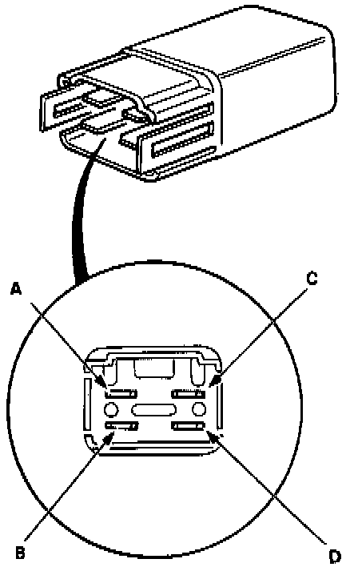
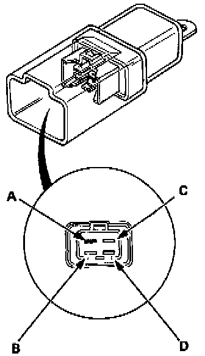

Radiator Fan Relay Test
A-Type:

B-Type:

C-Type:


RELAY TEST
There should be continuity between the A and B terminals when the battery is connected to the C and D terminals.
There should be no continuity when the battery is disconnected.
NOTE: The test procedure is the same for all relay types shown.